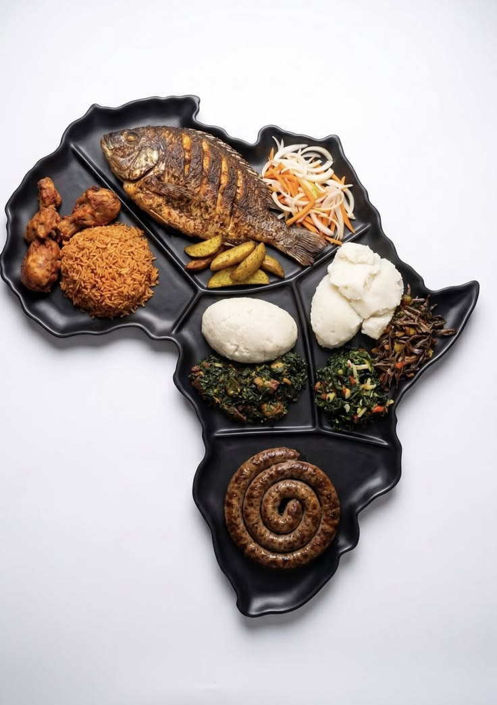
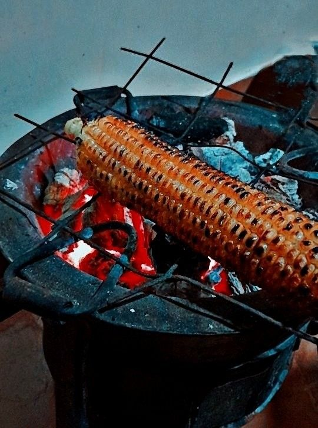
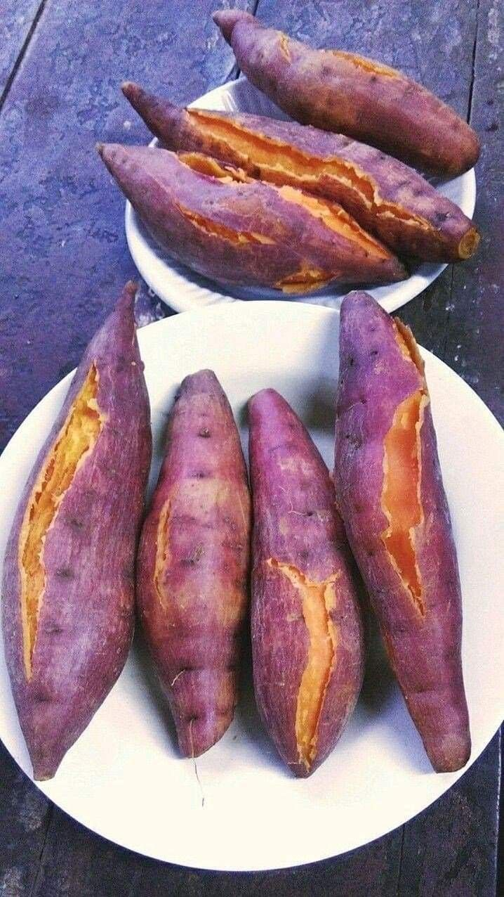
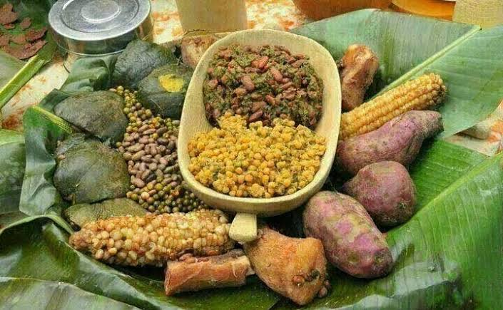

Kenya
Stories, recipes and traditions from the cooks and communities who shape Africa's extraordinary culinary landscape.
countries,
endless stories

From warm chapati to charcoal-roasted maize, begin with the everyday dishes that bring people together. Tap the heart to save a favourite.
Kenya

Rwanda

Kenya

Uganda & Rwanda

Every pot carries memory. Every ingredient maps a journey. Every shared plate keeps a story alive.
Across Africa, food is an expression of place and belonging, from sorghum, maize and beans cultivated across generations to spice routes that transformed entire coastlines.
Our storyWhat is new in African food right now, from ancient grains going global to a new respect for traditional cooks.

Young cooks are learning clay-pot cooking from their grandmothers, bringing slow, traditional methods back into modern kitchens.
Read the story
Gluten-free teff is now sold worldwide as a “super grain”.
Read moreCongolese-born chef Dieuveil Malonga travelled across Africa to learn from local cooks. In this TED talk, he shares what those kitchens taught him about ingredients, heritage and the future of African food.